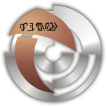

|
Iconiani
|
|
|
|  |
 |
La civiltà iconiana è fiorita molti millenni or sono, imponendo
una forte influenza sulle culture di molte antiche civiltà, come è dimostrato
dalle affinità linguistiche tra l'iconiano, il dewano, l'iccobarano e il
dinasiano. Gli antichi testi descrivono gli iconiani come «demoni dell'aria e
delle tenebre», suggerendo il loro uso di un sistema di trasporto
interdimensionale. La civiltà iconiana è stata annientata circa 200.000
anni or sono quando tutte le principali città di Iconia sono state distrutte
da un massiccio bombardamento orbitale su larga scala. Ricerche archeologiche successive
hanno rivelato che gli Iconiani non avevano un'indole aggressiva, ma avevano
sviluppato un tale sistema di difesa per proteggersi dagli attacchi dei nemici
che temevano la loro tecnologia.
Portale iconiano
Sofisticato sistema di teletrasporto che permetteva agli Iconiani di
circa 200.000
anni or sono di muoversi da un pianeta all'altro
coprendo istantaneamente distanze interstellari e che rendeva
superfluo l'uso di astronavi.
La prima scoperta di un portale iconiano in epoca moderna viene effettuata dall'equipaggio dell'Enterprise
nel 2365, su Iconia,
nella Zona Neutrale Romulana: a causa della sua localizzazione, il
portale viene distrutto perché non cada in mano nemica. L'Enterprise aveva seguito le tracce della
Yamato del Capitano
Donald Varley, il
quale, mediante lo studio di un misterioso artefatto ritrovato in un
sito archeologico su Denius III, aveva reperito prove dell'esistenza di
Iconia proprio nella
Zona Neutrale Romulana (Contagion).
Un secondo portale viene scoperto dal
Dominio nel
2372 su uno dei suoi
mondi periferici,
Vandros IV. Il
Dominio
invia un'equipe di scienziati a ripararlo e riattivarlo, tuttavia il
gruppo di Jem'Hadar di scorta se ne impossessa: il successivo
tentativo di rimettere in funzione il portale autonomamente viene
prevenuto ancora una volta dalla distruzione del portale stesso a
seguito della prima operazione congiunta fra forze del
Dominio e della Federazione.
Il portale era ospitato in una antica ziqqurat di pietra, la cui
struttura interna era costituita di neutronio solido, non vulnerabile
ad attacchi esterni, persino se condotti con siluri quantici.
Il portale può originare un campo di smorzamento che disattiva le armi in
prossimità della struttura, sul territorio (To the Death).